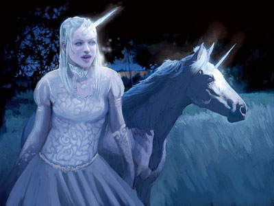

��芮 Lurue（独角兽女神）

费伦神系 微弱神力
别称：圣独角兽 the Unicorn，独角兽女王 the Unicorn Queen，智性神兽女王 the Queen of Talking Beasts
圣徽：独角兽与其鬃毛缠绕的新月
居住界域：自然之殿 House of Nature
阵营：混乱善良 CG
神职：智性神兽 talking beasts，有智能的非人生物 intelligent nonhumanoid creatures
信徒：德鲁伊，表演艺人，流浪者，游侠，旅行者，独角兽骑乘者
牧师阵营：中立善良 NG，混乱善良 CG，混乱中立 CN
神域：动物 Animal，混乱 Chaos，善良 Good，医疗 Healing
喜好武器：独角兽之角 A unicorn horn（短矛 shortspear）
��芮酷爱四处漫游，她的性格也有些反复无常－不过，一旦她认为对方值得信任，就会展现忠实的友谊，也绝不会弃陷于困境的信徒不顾。当必须面对战斗时，��芮会是非常棘手的敌人，但她喜爱的是各种轻松的戏谑、巧妙的谜题、新奇的发现、以及生命中的种种欢悦探索。
�� 芮的教会内部没有任何正式的神职阶层系统，也没有任何以其名号建立的神殿或圣坛。虽然有些种族（比如独角兽、飞马pegasus、以及智性猫头鹰）尊她为 自族的的守护女神，但她绝大多数的信徒却都是因自身独特能力（比如「启蒙术」awaken的受术者）而遭放逐的弃民。信奉拉芮的牧师都致力于援助并抚慰贫困之人、助身怀梦想者达成目标、并救助所有身陷困境而急需援手之人。他们很少在同一件任务上投注过多时间与注意力，常在某一特定任务结束时就飘然离去，继 续自己的流浪。许多��芮的牧师都会成为冒险者，在费伦大陆上四出旅行以拨乱反正，并藉此寻求各种欢乐新奇的体验、以及自我的成长。
信奉�� 芮的牧师与德鲁依在午夜时祈祷以获得神术（如条件许可，会尽可能在林荫的幽谷间或月光照拂的林间空地中祈祷）。拉芮教会的两个圣日位于「仲夏节前夕」 （Midsummer Eve）与「月宴节」（the Feast of Moon）。前者是信众整夜狂欢的庆典，充斥着各种狂放的戏谑与喧哗。当夜会有许多在乡野间或横越天空的狂野骑乘，以及各种夸张的滑稽短剧、风趣演说、讽刺辩论、以及浪漫的告白。许多独角兽也会选在当夜交配繁衍后代。「月宴节」当天则会举行静肃的仪式，标志着冬天的到来，并追思已逝之人。许多伟大的艺术作 品与传奇诗歌都会选在仪式中发表，并获得无声的喝采－在银月城（Silvermoon），此活动甚至会持续一整天。许多信奉拉芮的牧师与德鲁依都会兼职成为游侠。
历史/与众神的关系 History/Relationship：
在古老的传说中，��芮是苏伦（Selune） 的女儿。独角兽女王是梅莉凯（Mielikki）的同盟、密友、也是森林女王的座骑－并间接地为西凡那斯（Silvanus）服务。她与希昂莉亚（Shiallia）、桂伦风暴（Gwaeron Windstorm）共事，也是努比恩（Nobanoin，雄狮之神）的紧密盟友。此外，她与裳�A亚（Chauntea）之间的关系也十分友好。她对马拉的恨意十分炽烈，谴责猛兽之王协助红袍法师会制造黑邪独角兽（black unicorn）的罪行。而相对地，马拉也乐于品尝��芮喉头的鲜血，视她为另一个值得猎杀的目标。
教义 Dogma：
圣 独角兽是希望、欢乐、以及援助的象征，也是贫困者、不幸者、以及被弃者的屏障。生命就应该好好地细细品味，应当充满欢笑。所有任务都是挑战；只有心血来潮 才能带来各种惊奇的体验。努力地实现各种不可能的梦想，追求奇迹，化不可能为可能。不管多么独特，每个人都必定有可取的优点、也必定会有松懈的弱点。在敏锐的才智与自由的欢笑之前，邪恶终将消失无踪。汝当设法搜寻独角兽，也设法追寻快乐。
--
资料来源：费伦大陆信仰与神系《Faiths & Pantheons》
译者：一凡